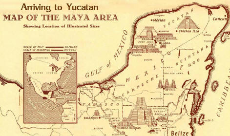
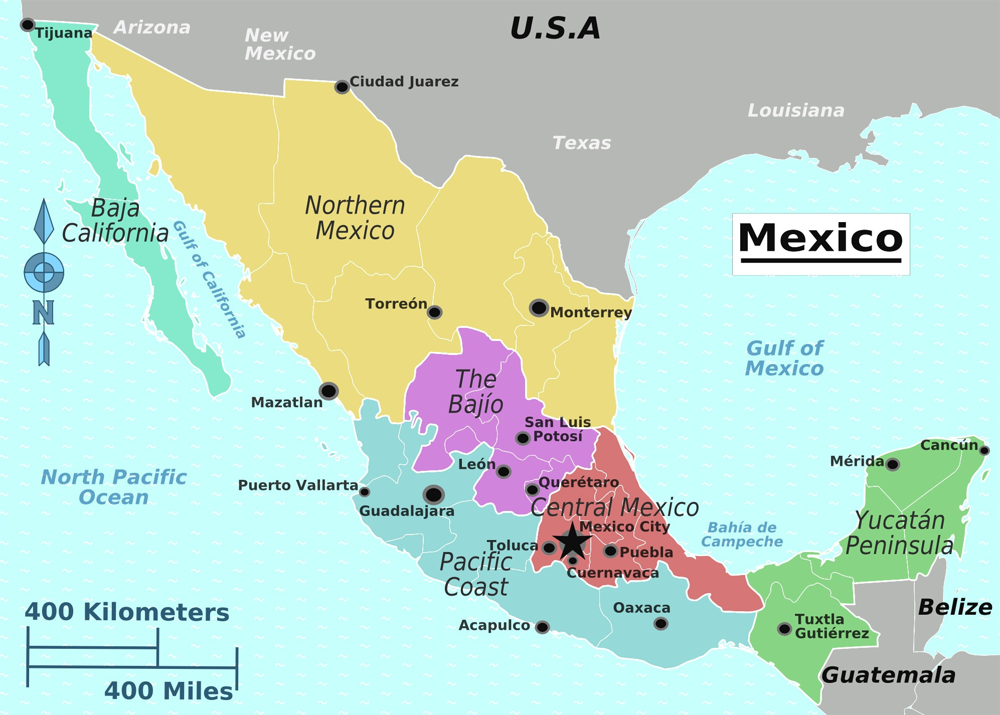
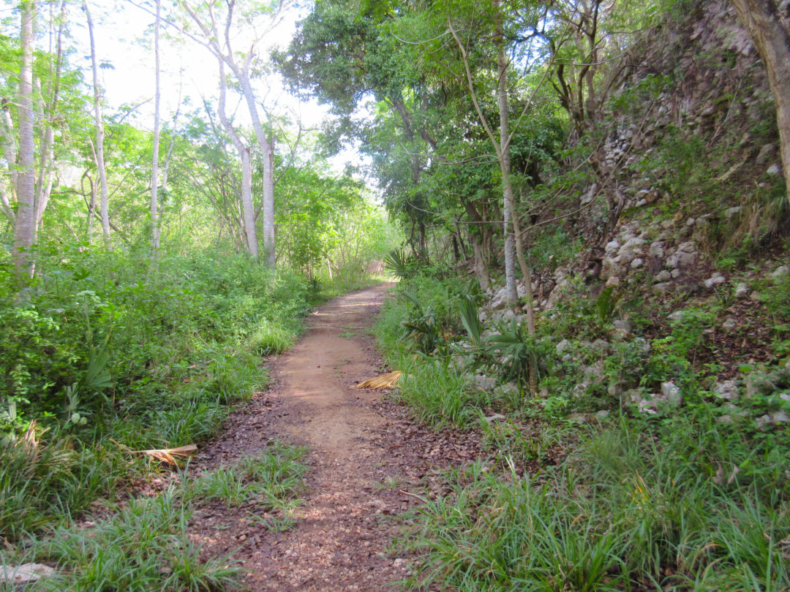
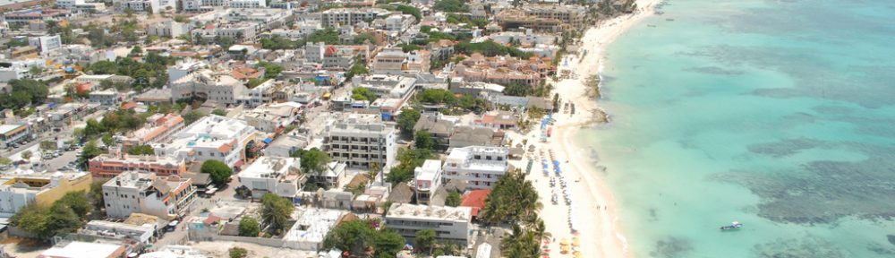

Welcome
The Yucatán Peninsula is a region of southeastern Mexico, consisting of the Mexican states of Yucatán, Campeche, and Quintana Roo. The Yucatán was the home of the Maya civilization before it was conquered by the Spanish Conquistadors in the 16th century. Much of the population is part or all of Maya descent, and in many places the Maya language is still spoken, usually in addition to Spanish, the main language of business.
Until the mid 20th century, most of the Peninsula's trade with the rest of Mexico was by sea, and the culture, cuisine, and traditions developed different flavors from other parts of Mexico. Starting in the late 20th century the Yucatan has become more integrated into Mexico, especially such areas on the Caribbean coast as Cancún and Chetumal, where many people from other parts of the nation have moved to take advantage of the economic opportunities of development. The Mayan Riviera stretching south from Cancún has seen the most growth related to tourism.
History & Culture
The Maya civilization flourished in the Yucatán Peninsula for more than a thousand years before the Yucatán was conquered by the Spanish in the 1500s. The Maya and Spanish heritage combined to create the new culture of Yucatán. Until the mid-20th century there were no railways or highways linking the Peninsula to the rest of Mexico so most commerce was by sea. The long-term comparative isolation of the Yucatán helped make it one of the most culturally distinctive regions in Mexico.
Yucatán is famous for ancient Maya ruins such as Chichén Itzá. Contrary to the strange misconception, the Maya people never "disappeared". Most of Yucatan is still predominantly Maya. Maya culture, identity, traditions and language are very much alive, especially outside of main cities. Referring to locals as Mexican rather than Maya risks offending them.
Away from beaches and tourist hotels, walking round in a bathing suit or short shorts is considered improper. At the very least, for a woman, scanty attire will invite stares and unwelcome comments. If you plan to enter churches, be sure to have something to cover your shoulders at the very least.
Spanish is the main language. English will be understood at the more expensive resorts and tourist locations. Knowing a few phrases of basic Spanish will help away from the main tourist resorts and can often help you find better deals. Yucatecos are generally tolerant of visitors who do not speak Spanish fluently and appreciate the effort.
In much of the Yucatan some Maya is spoken. Except in a few small villages, almost everyone will have at least a working knowledge of basic Spanish. Maya place names are usually accented on the last syllable, otherwise generally pronounced the same as in Spanish. The letter "X" in Yucatán is used for the sound in the Maya language that's the same as "Sh" in English. For example, "Uxmal" is pronounced "Oosh-MAL".
Arriving & Departing
By Plane
Fly in through Cancún, Cozumel, or Mérida. For the best deals, look for charter flight consolidation seats - spare capacity on flights run by package tour operators to Cancún.
By Bus
From the west through the Chiapas or Villahermosa states. Buy tickets for long journeys in advance, particularly at busy times such as weekends and public or religious holidays. Grupo ADO/OCC is the major company at near monopoly status operating first and second class buses to/from the area and within the area. Check Ticketbus (their online booking site) for times and prices. Only rule out overnight buses for what you would miss en route.
By Train
There is no remaining passenger train service in the Yucatan Peninsula. After the federal government privatized the railways, most passenger services across the entire nation were discontinued.
Getting Around
By Bus
Many different class buses are available to/from all the major and many of the minor cities. Mexican first class buses are excellent value and remarkably comfortable - comparable to European train services. Many cheaper services are also available - from second class (little noticeable difference really) to very basic minibus and truck services. Safety seems to decrease with price, however - second class and below may lack seatbelts. Beware of the excessive air conditioning that seems to be a feature on most services - the bus may be many degrees colder than the outside air, and being stuck on a twelve hour journey without adequate clothing can make a journey singularly unpleasant. Travelling second class is not recommended for taller people (5'10" feet or above). As second class busses hold more seats than first class ones do, there is almost no leg room. The major first class bus line is Autobuses del Oriente (ADO). Most of the smaller second class lines (Mayab, Oriente for example), are owned by ADO.
Major difference between second class buses and first is the distance traveled and number of stops. First class buses run on comparable or longer routes and make limited or not stops en route on the toll highways (wherever available), second class bus use the localized libre road making stops anywhere along the route to pick up and drop off people on request.
By Combi
Combi refers to collective-taxis that offer both inter and intra-city services. Cheaper than a taxi and usually faster than a bus since it makes less stops.
By Taxi
Available for hire even in small towns. For long distances however, like the caves at Lol-tun, be sure to agree on a price before boarding, or you might get ripped off.
By Rented Car
In general, driving in Yucatan is very safe. The roads throughout the Yucatan Peninsula are constantly being improved, and there are many well-paved highways to take you to major attractions, such as Uxmal, Chichen Itza, Merida, Izamal, etc. Parking on the street can sometimes be difficult in downtown Merida, but there are parking lots on almost every street (look for the big "E" signs, for "estacionamiento"). Parking is safe, as long as you follow the usual precautions: don't leave valuables in full view, lock your car, etc.
There are various car rental agencies in Cancún and along the Mayan Riviera, as well as in Merida and Campeche. Along with the leaders (Avis, Hertz, etc.), there are local companies (Kimbila, Mexico Rental, etc.) that rent cars that might be less new. Be sure that your car rental includes insurance!
Stay Safe
Strict drug possession policy exists in Mexico. Be very careful even with "greens". Local police are hopelessly corrupt and love to catch unwary tourists with small quantities of marijuana. Threatening long prison terms, whether this is a likely outcome is a moot point, their main aim seems, unsurprisingly, to exact bribes: in some areas a fairly standard 50% of all the traveller's money.
Caution is also advised on long bus journeys, particularly across state lines, as police or military checkpoints exist and passengers may be asked for identification or searched. In general, however, these checks seem to be aimed at locals, particularly in the Zapatista homeland in Chiapas.